Reliable Granular References to Changing Linked Data
Tobias Kuhn
ICT.Open
Amersfoort, Netherlands, 19 March 2018
These slides: http://purl.org/tkuhn/presentations/ictopen2018-nanodiff
Reproducibility
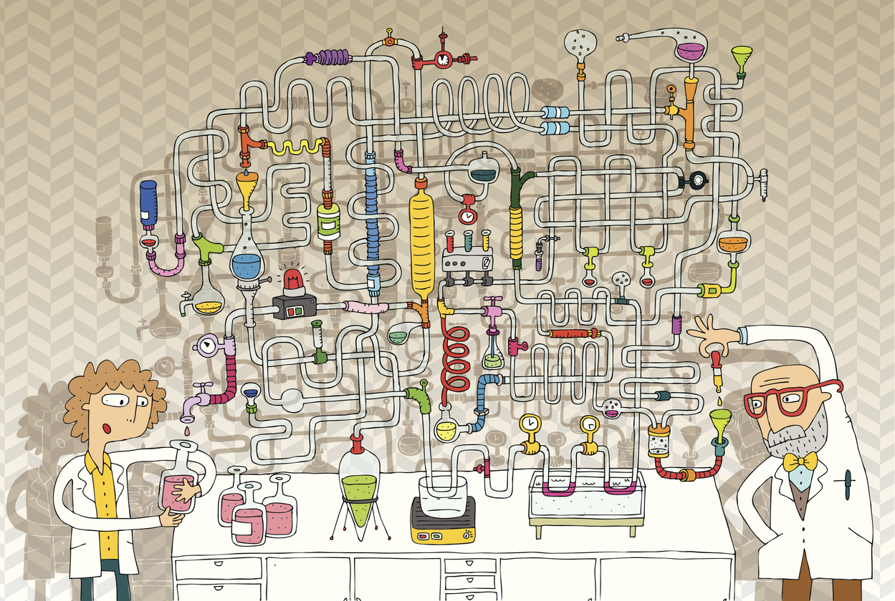Reproducible (Linked) Data Science is complicated...
Even Just Specifying the Used Data is Complicated
Even Just Specifying the Used Data is Complicated
Even Just Specifying the Used Data is Complicated
Even Just Specifying the Used Data is Complicated
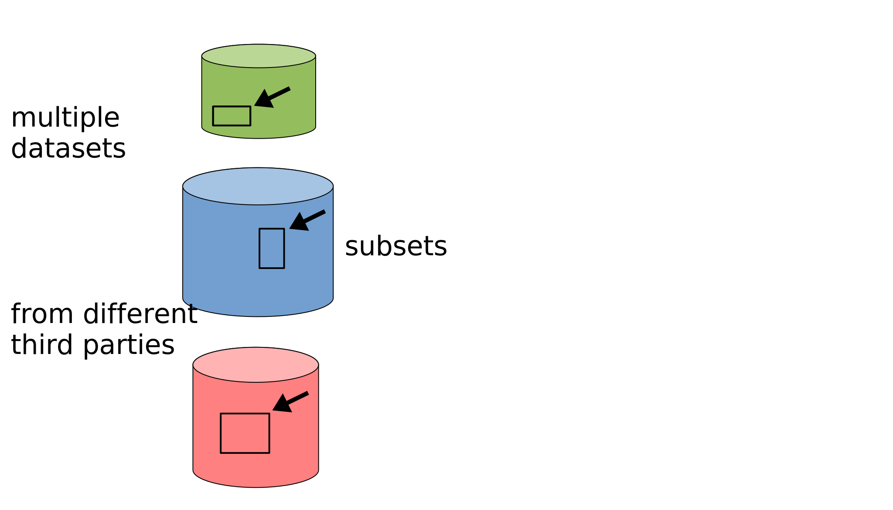Even Just Specifying the Used Data is Complicated
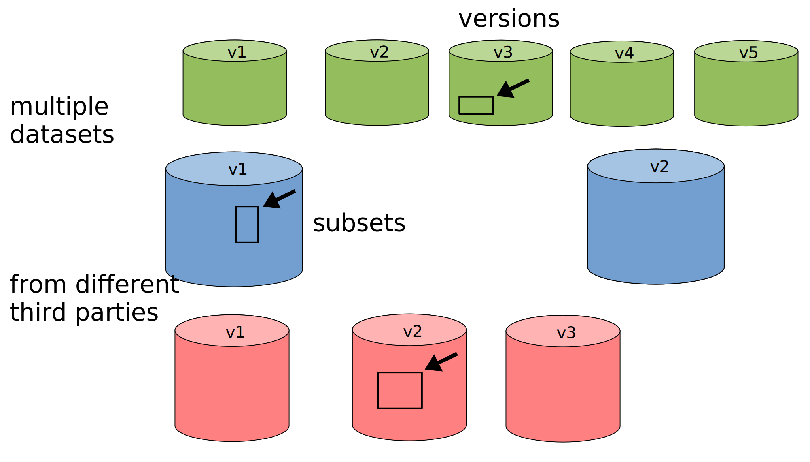Even Just Specifying the Used Data is Complicated
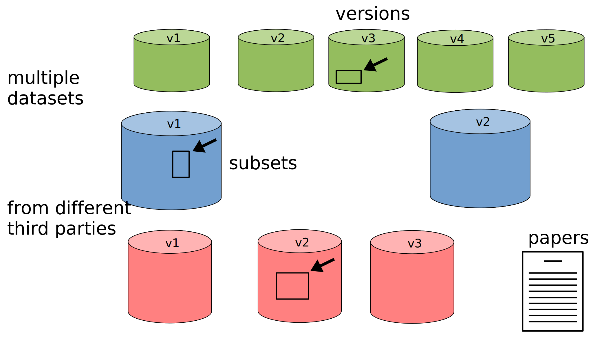Nanopublications
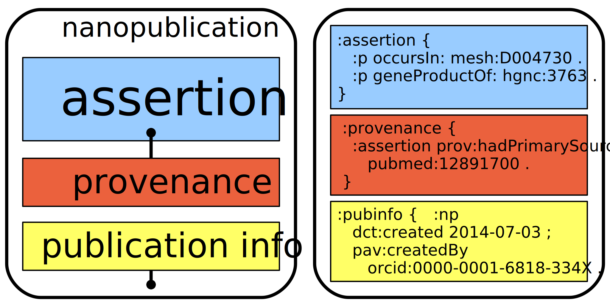Trusty URIs make resources ...
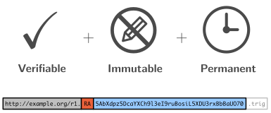Approach: Granual Versioning

Approach: Granual Versioning
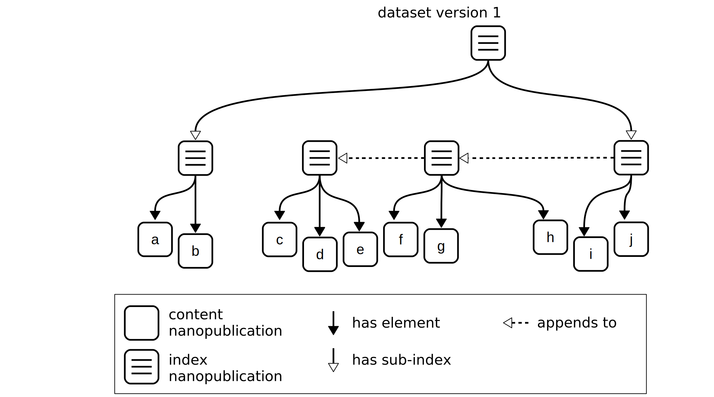Approach: Granual Versioning
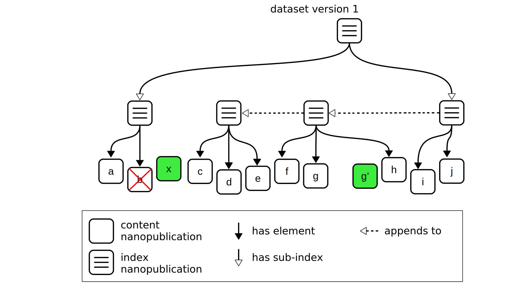Approach: Granual Versioning
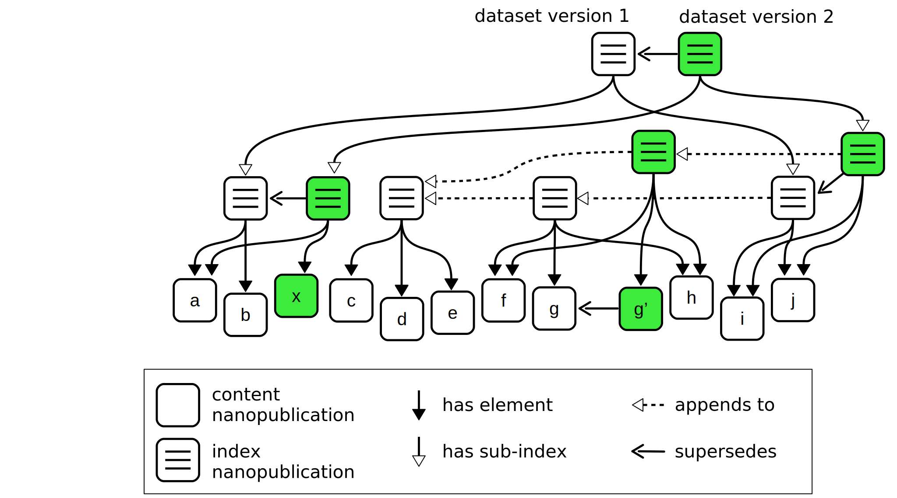Approach: Granual Versioning
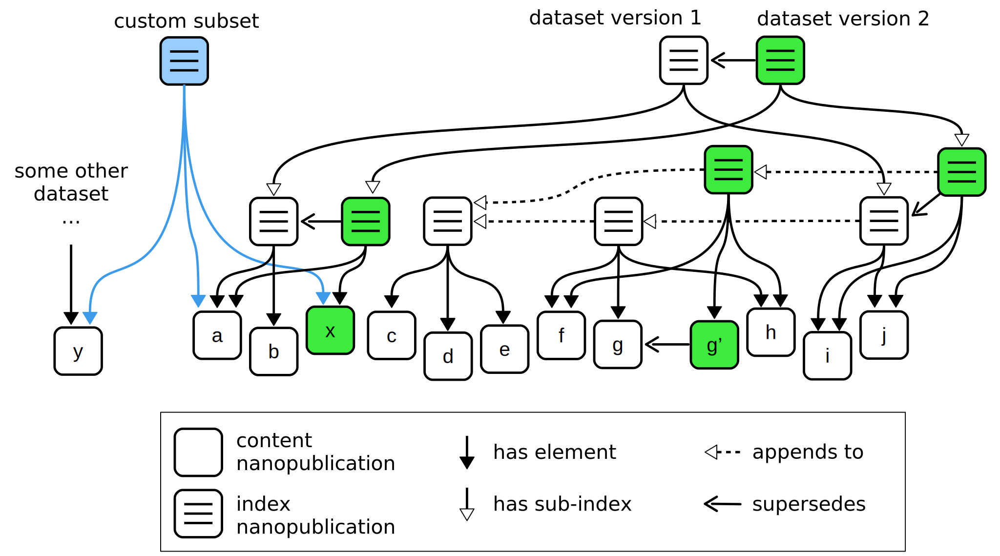>10M Nanopublications on a Server Network
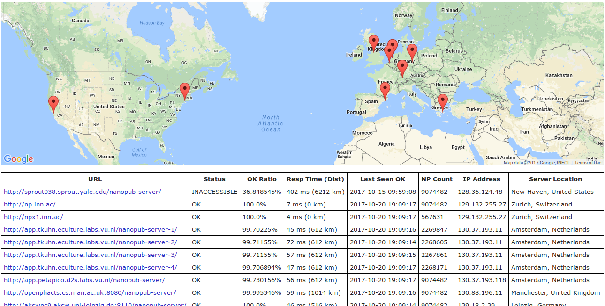Data Publishing with Nanopublication Datasets
Researchers can now exactly specify their input data.
In papers:
"... we used DisGeNET data about these diseases [27]"
[27] Nanopublications from DisGeNET v4.0.0.0 about umls:C0003507 or umls:C1956346. http://purl.org/np/RAcf4tihZLL_aK81hwThIrNxjOhks4sEloBStEgzyR1tI, 11 May 2017.
In code:
np get -c -o data.trig \
RAcf4tihZLL_aK81hwThIrNxjOhks4sEloBStEgzyR1tI
# Run analysis here
Evaluation 1
How well does it work on the data publisher side?
Evaluation based on WikiPathways, a community-curated open database of biological pathways:
- ~ 10 000 nanopublications
- Monthly releases over 11 months
WikiPathways Versions
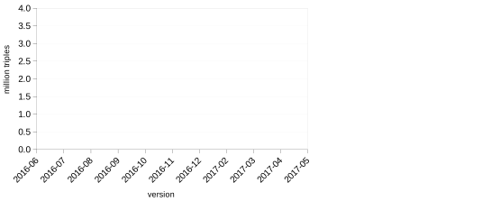WikiPathways Versions
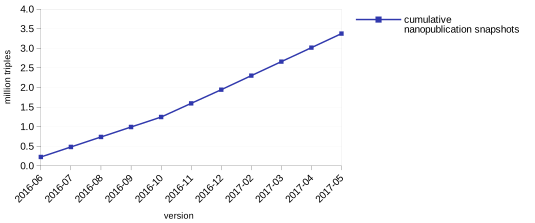WikiPathways Versions
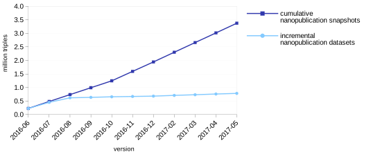Evaluation 2
How well does it work on the data consumer side?
Evaluation based on DisGeNET, a database on human diseases and their related genes:
- 1 414 902 nanopublications in version 4.0
- Highly cited: 31 publications in 2017 (until 5 May)
20 Publications that Used DisGeNET
20 Publications that Used DisGeNET

Time to Download Typical Subset
Downloading full dataset from DisGeNET server
VERSUS
Downloading 18 098 nanopublications through the server network
Time to Download Typical Subset
Downloading full dataset from DisGeNET server
VERSUS
Downloading 18 098 nanopublications through the server network
Data Publishing with Nanopublication Datasets
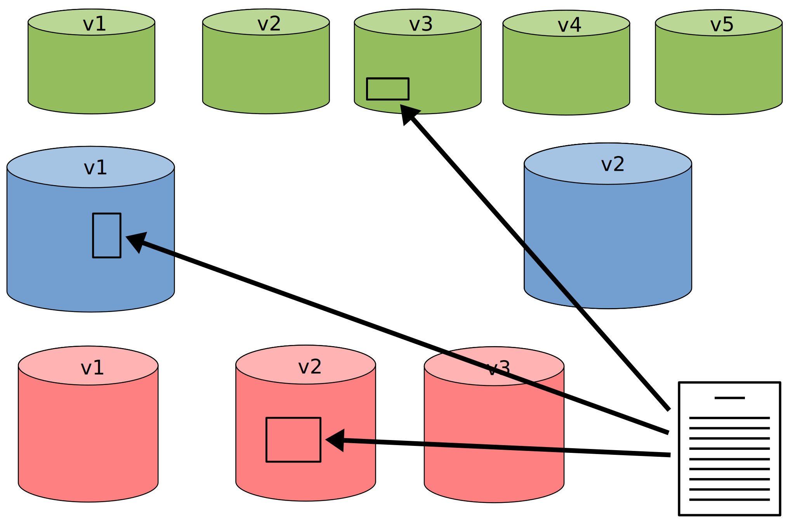Querying the Nanopublication Cloud
Separation between Publishing and Querying:
- Nanopublication network for publishing ✓
- Ongoing: development of query services